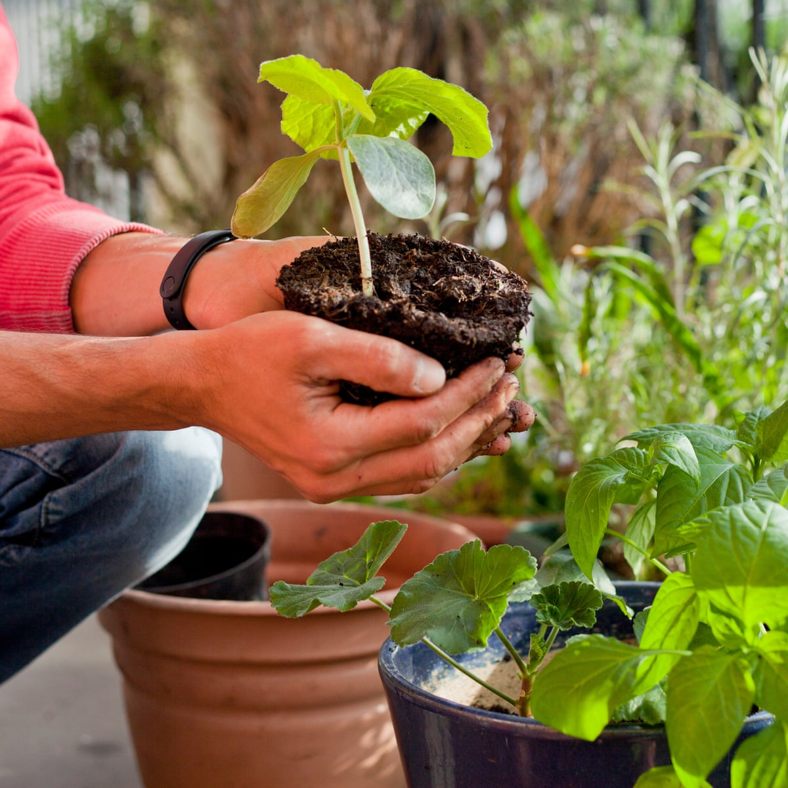
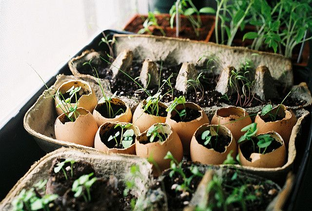

How I Started Gardening?
It was the time during lockdown that made me do something just to spend my time and never thought that could take me such a long way. It was boring to stay home all day with the same routine of attending online classes, doing household chores and preparing for placements. Its a coincidence that my love towards nature lead me to a hobby of terrace gardening. The COVID-19 pandemic had made me so depressed about uncertainities in life and gardening was the one thing that gave me hope.

It was in early July of 2020 when I started growing my first microgreen, fenugreek that I got from our kitchen. Day by day the scale of growing increased, I started sowing tomatoes, chillies, coriander and many other seeds that I commonly get from the kitchen and later on with potato sprouts, onions, gingers, garlic, cucumbers, brinjal, peas, beans, bhindi and some medicinal plants like balloon vine, holy basil,curry leaves and carom. Every morning, I wake up excited to check whether the seeds have germinated, what plant would have bloomed and what can be harvest. I started using this lockdown to discover the joy of growing my own food and unveil the wonderful things that it will lead to.
Growing plants and taking care of them like my children was so satisfying. I gradually got addicted to thishobby; initially it was 4-5 plants and now its around 10 varities of flowering plants and more than 15vegetables and herbs plants on my terrace. Looking at their everyday growth, waiting for males andfemale flowers on gourds, understanding their life cycle, reading books on gardening, watching numerousyoutube channels, following so many inspiring home gardeners on social media and experimenting stuffwas all that took me to another world. It fills so much hope as you sow seeds and expecting them togerminate, transplanting the seedlings and praying that it doesnt die, watering the young plants withpatience. It is just the most calm and wonderful feeling.
The idea of reuse, sustainable living and zero waste lifestyle started influencing me and I started growingherbs and seelding in old cartoon boxes, batter covers, milk packets, waste bottles and containers whichproved that space is never a constraint to grow food. And as soil plays a very important role ingrowing plants, it was needful for me to look for an alternative to use less soil and make use of dryleafs and coconut coir which are easily available, increase wetability, improve root growth andmore importantly, a zero budget composting method that I can have adopted. Saving seeds from my ownplants was another practice that really helps to get fresh vegetables throughout the year without buyingseeds from stores. As I am a enthusiast of photography, capturing beauties of my garden and documentingthem is a joyful thing which I have shared in this website.
The journey of gardening is such a pleasure because it is an experience that has a new angle every day and has no end to it. I have been learning the lessons of life - learning from mistakes, being hopful, believing in tomorrow, appreciating nature's beauty, importance of food, and satisfation in little things that make so much difference. I'm sharing my love for gardening and want to bring awareness among everyone about organic farming and inspire everyone to become confident in growing their own greens for a healthier lifestyle and a sustainable future. So I invite you to join me as you start your gardening journey and let’s look forward to delicious future together!